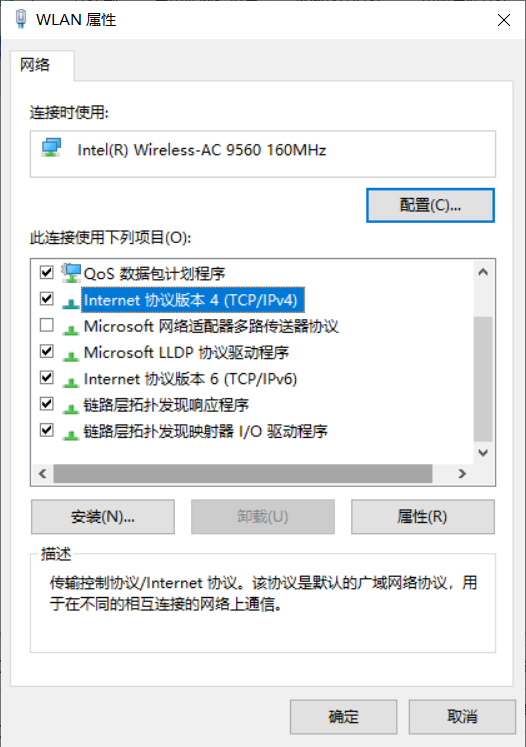
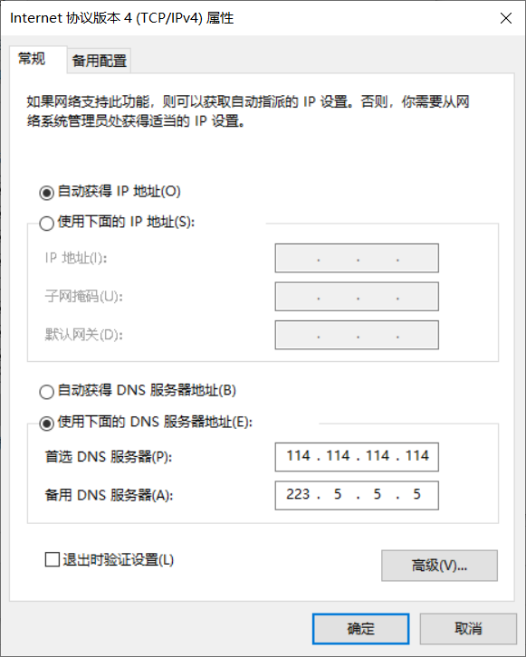

Windows修改DNS方法
DNS是域名系统，我们链接互联网的时候，仅仅有一个IP地址是不够的，还需要设置域名，能够使用户更方便的访问互联网，而不用去记住能够被机器直接读取IP数串。通过域名，最终得到该域名对应IP地址的过程叫做域名解析（或主机名解析）。
修改DNS的好处就是可以适当提高上网速度；更换DNS可以访问某些因为域名解析存在问题而不能访问的网站；可以屏蔽运营商的广告，还可以帮助您避免被钓鱼的危险；
当然修改DNS也有可能带来副作用，比如无法访问页面或者访问的页面不是你想要的页面；访问速度没有你从运营商处获得的DNS访问分速度快，延时比较大；受到DNS劫持，插入广告和被钓鱼网站攻击。
Windows修改DNS步骤
1.打开windows设置，找到并单击“网络和Internet”选项;
2.右侧下拉找到“更改适配器选项”，单击打开;
3.右键你的以太网，选择“属性”打开;
4.进入后下拉下方选项，找到“Internet 协议版本 4 (TCP/IPv4)”选项并选中，单击“属性”进入;

5.进入后即可勾选为“使用下面的DNS服务器地址”选项，进行DNS服务器设置，确定保存即可。

6.返回桌面重启电脑或者重启网卡即可设置完成。
常用的DNS服务器
阿里的DNS是223.5.5.5和223.6.6.6
百度的DNS是180.76.76.76
114的DNS是114.114.114.114和114.114.115.115
谷歌的DNS是8.8.8.8和8.8.8.4
微软官方推荐使用的DNS服务器地址为4.2.2.1以及4.2.2.2